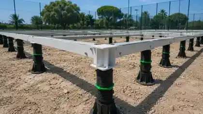

What does SPORTENVO supply?
A modular steel foundation base configured around the selected court system, confirmed site inputs and project scope.
MODULAR FOUNDATION SYSTEM
SPORTENVO supplies a modular steel padel court foundation base for selected commercial, leased and relocatable projects. The system is configured around the confirmed court model, site levels, support conditions, anchoring, drainage and project loads, with final suitability subject to site-specific engineering review.
Quick Answer: A padel court does not always need a new permanent concrete foundation. An engineered modular steel base can suit selected leased or relocatable sites where the supporting ground, slab or deck is verified. It still needs a confirmed load path, leveling, anchoring and drainage design. Choose concrete or modular from the actual site, court system, wind exposure and any roof reactions, not installation speed alone.

Commercial Project Supply
Send the project location, court quantity and site condition first. We can confirm the modular base configuration, court-to-foundation interface, required site inputs and quotation scope before production.
To start, send
Country / CityCourt QuantityIndoor / Outdoor
Get Project Quote Not sure which system? Use Project Configurator →System Overview
Modular steel foundation base supplied for selected padel projects where reducing permanent civil works, improving leveling flexibility or planning future relocation is commercially useful.
The padel court modular foundation is specified around venue use, local climate, ground conditions and the confirmed commercial brief. Final structural and foundation requirements remain project-specific.
Commercial Snapshot
A fast procurement view for leased, relocatable or selected commercial sites where a modular steel base may reduce permanent civil works while still requiring ground and load-path review.
Last updated: September 30, 2026. The values below describe the SPORTENVO reference configuration for buyer planning. Final geometry, support reactions, anchors, leveling and site suitability are confirmed against the actual project conditions.
| Best fit | Leased sites, relocatable projects and selected venues where leveling flexibility or reduced permanent civil works is commercially useful. |
|---|---|
| Reference specs | 100 × 200 × 3.0 mm main beam; 14 mm welded plate; 8 mm clamping plate; 2 m × 2 m modules; up to 180 mm reference adjustment range. |
| Additional reference | 18 mm board; hot-dip galvanizing + powder coating; 8.8-grade bolts with 304 stainless anti-theft caps; 2,765 kg reference leg load in the documented configuration. |
| Site requirements | Ground capacity, levels, drainage, access, court loads, wind exposure, roof loads and local engineering must be reviewed before approval. |
| Supply scope | Confirmed modular steel base, connection / support components, compatible court interfaces, technical drawings, packing and installation guidance. |
| Buyer provides | Project location, court quantity, site survey / level information, ground or structural-deck condition, drainage, wind exposure and any roof requirement. |
| Related guide | Padel Court Foundation Planning Guide — Concrete vs Modular → |
Buyer Search Answers
For commercial procurement, confirm the supplied steel-base configuration, site inputs, court compatibility and project engineering boundary before comparing foundation offers.
A modular steel foundation base configured around the selected court system, confirmed site inputs and project scope.
The documented system includes 100 × 200 × 3.0 mm main beams, modular sections, adjustable supports and project-specific connections; final geometry remains subject to review.
Project location, court quantity, ground or structural-deck condition, level information, drainage, wind exposure and any roof requirement.
Yes. The modular base can be coordinated with compatible SPORTENVO court systems and technical drawings as one commercial project scope.
Key Considerations
Foundation Decision
A foundation is not only a flat surface. It must coordinate court loads, anchoring, ground support, level tolerances and drainage with the selected court and any roof or high-wind requirements. Padel court foundation planning: compare concrete vs modular →
Commercial Supply Specification
The following values describe the SPORTENVO reference modular steel foundation configuration used for commercial project evaluation. Final geometry, loading, leveling range, anchors and site suitability remain project-specific.
| Main beam | 100 × 200 × 3.0 mm reference main beam |
|---|---|
| Connection plates | 14 mm welded plate with 8 mm clamping plate in the reference configuration |
| Module format | 2 m × 2 m modular sections using 40 × 40 × 2.0 mm / 40 × 20 × 2.0 mm reference members |
| Deck board | 18 mm board, 1 m × 2 m reference format |
| Height adjustment | Up to 180 mm reference adjustment range for leveling coordination |
| Reference leg load | 2,765 kg per leg in the documented reference configuration; project load path still requires engineering review |
| Corrosion protection | Hot-dip galvanizing plus powder coating in the reference configuration |
| Fasteners | 8.8-grade bolts with 304 stainless anti-theft caps in the reference configuration |
| Site requirements | Ground capacity, levels, drainage, wind exposure, court loads, access and local engineering must be checked before approval |
Buyer FAQ
Yes. SPORTENVO supplies modular steel foundation bases for selected commercial, leased and relocatable padel projects, subject to confirmed site and engineering requirements.
The documented reference configuration includes 100 × 200 × 3.0 mm main beams, 14 mm welded plates, 8 mm clamping plates, modular steel sections, adjustable supports and project-specific fasteners and connections.
Yes. The foundation base can be coordinated with compatible SPORTENVO court systems, technical drawings and project interfaces as one commercial supply scope.
Provide the project location, court quantity, ground or structural-deck condition, site levels, drainage, wind exposure, selected court model, roof requirement if any and installation access.
It can be suitable for selected leased, temporary or relocatable projects where reducing permanent civil work is useful, subject to site and engineering review.
Use the Padel Court Foundation Guide to compare concrete and modular systems, ground conditions, drainage, leveling, anchoring and roof loads.
No. A suitable existing concrete base or an engineered modular foundation can be considered instead of a new permanent concrete foundation. The selected system must still transfer the confirmed court loads to a verified supporting surface. Avoid interpreting a portable or modular system as permission to install on unverified ground.
The supporting ground, slab or structural deck needs verified capacity for the actual support reactions, controlled settlement, surveyed levels and a defined drainage outlet. Loose fill, soft ground or a deck with unknown capacity must be assessed before selection. Adjustable supports correct levels within the engineered range; they do not improve the bearing capacity of the ground.
Relocation can be planned where the supplied court and base are designed for dismantling and reassembly. Confirm component condition, connection details, handling and access before moving. The new site requires its own ground, load, anchoring, level and drainage review; approval at the original site does not transfer automatically.
Coordinate the playing-surface build-up, finished levels, water paths beneath and around the base, and a suitable discharge outlet before installation. Include roof runoff if a roof is planned, and keep supports and access routes clear of drainage paths. Raising or leveling the court is not proof that the venue drains correctly; review the drainage planning guide.
The project drawings must define how court connections transfer loads through the steel base, supports and bearing interface to the ground, slab or structural deck. Wind can also create horizontal and uplift actions that require a confirmed restraint and anchoring strategy. Any roof reactions need separate coordination; a reference leg-load value does not approve the complete load path.
Project Fit
The modular base is a foundation strategy, not a substitute for site engineering. It is selected when permanent civil work, leveling or future relocation are key project constraints.
Site Acceptance Gate
The steel base can reduce permanent civil work, but it cannot compensate for unknown bearing capacity, uncontrolled settlement, unresolved drainage or project loads outside the confirmed design basis.
Confirm whether the base sits on prepared ground, an existing slab or a structural deck. The supporting surface must be capable of carrying the project reactions.
Provide actual level differences across the court footprint. The reference system offers up to 180 mm adjustment, but that does not mean every uneven site is automatically suitable.
Define how water moves below and around the court. Level correction without a drainage strategy can leave the finished venue with standing-water or maintenance problems.
Confirm the selected court and whether a roof is included. Roof reactions and high-wind requirements can materially change the foundation design basis.
Anchors, supports and connections must match the actual ground / deck and exposure. They should not be copied from another project without review.
Confirm unloading, lifting, local labor and equipment access before shipment, especially for constrained rooftops, resorts or operating venues.
| Select concrete when | A verified existing slab meets the court and anchoring requirements, or a permanent engineered foundation is preferred for the long-term venue. New concrete work still requires ground, drainage and project-load review. |
|---|---|
| Consider modular when | The lease, future relocation or reduced permanent civil work is a key constraint, and the verified supporting surface, levels, drainage and project reactions suit the engineered modular configuration. |
| 2,765 kg / leg means | A reference load value for the documented SPORTENVO modular-foundation configuration. It is useful for project discussion but does not independently approve the ground, slab, deck, anchors or complete project load path. |
| Do not select Modular when | Ground capacity is unknown, settlement risk is unresolved, drainage has no defined outlet, level differences exceed the engineered range, or roof / high-wind reactions have not been incorporated into the foundation review. |
| Buyer / local team provides | Site survey and levels, supporting-surface information, drainage conditions, local ground / structural verification, access constraints and any local engineering / approval requirements. |
| SPORTENVO confirms | The supplied modular-base configuration, court interfaces, reference support / connection details, project drawings, packing and installation guidance according to the agreed project scope. |
Foundation Decision Path
Use the foundation guide for system selection, the Harwich case for portable-project context, and the Mobile Court page when future relocation is part of the commercial brief. The Harwich case records a self-supporting portable base; it is not a capacity test or approval for every modular-foundation configuration.
Verification & Project Support
Use the quality, engineering and project-reference pages to verify the specification, manufacturing process, documentation and delivery scope before the final order is confirmed.
For the quoted foundation, agree the support layout, reaction schedule, court connections, anchoring and leveling details. Ask which component, coating and pre-shipment inspection records can be identified to your order, and confirm the included project drawing and document package. Public photographs show system context, not verified capacity or approval for your site; document availability must be confirmed in the quotation.
Foundation System Video
Watch a short SPORTENVO overview of the modular steel foundation base, including leveling adjustment, drainage coordination and court integration for selected commercial padel projects.
Procurement Resources
Use the buyer guides and project references to check the site, scope and commercial assumptions before the final system is confirmed.
Related Systems
Project Review
Already planning a project? Start with the country, court quantity and ground condition. Use the RFQ tool when you are ready to compare base-system scope and local civil responsibilities line by line.
A modular base is a foundation strategy, not a substitute for site engineering or ground-capacity review.